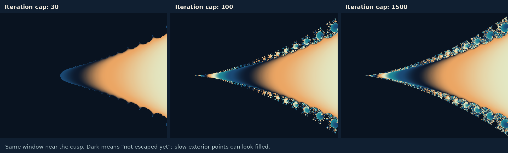

Neutral cycles: flowers, Siegel disks and Cremer points
A cycle whose multiplier has modulus exactly 1 neither attracts nor repels to first order. What nearby points do then depends on higher-order terms and, when the multiplier turns by an irrational angle, on the arithmetic of that angle. Such cycles occur on the boundary of every hyperbolic component, and they produce the subtlest behavior in the quadratic family.
Three kinds of neutral cycle
The multiplier λ of a cycle decides how nearby orbits behave to first order: they are pulled in when |λ| < 1 and pushed away when |λ| > 1, as the orbits chapter explains. When |λ| = 1 the cycle is called neutral or indifferent, and λ = e2πiθ for an angle θ measured in turns. There are three cases:
- Parabolic: θ is rational, so some power of λ equals 1.
- Siegel: θ is irrational and, near the cycle, the return map is the rotation w ↦ λw in a suitable coordinate. Nearby points then circle the cycle forever.
- Cremer: θ is irrational and no such coordinate exists.
Whether a map can be straightened into its linear part near a fixed point is the linearization problem. For 0 < |λ| < 1 and |λ| > 1 Gabriel Kœnigs settled it in 1884: the answer is always yes (the orbits chapter uses this to explain how fast orbits settle). On the unit circle it is one of the deepest questions of the subject (Milnor’s lectures, §§7–8).
Neutral cycles are not rare in the quadratic family: every boundary point of a hyperbolic component has one. On the main cardioid the fixed point z = λ/2 of z2 + c has multiplier λ when c = λ/2 − λ2/4, as the periodicity chapter derives, so as θ runs from 0 to 1 the parameter runs once around the boundary of the cardioid.
| Angle θ | Parameter c on the cardioid | Kind of fixed point |
|---|---|---|
| 0 | 1/4, the cusp | Parabolic, one petal |
| 1/2 | −3/4, where the period-two disk is attached | Parabolic, two petals |
| 1/3 | −0.1250 + 0.6495i, the root of the 1/3 bulb | Parabolic, three petals |
| (√5 − 1)/2 ≈ 0.618 | −0.3905 − 0.5868i | Siegel: the golden-mean Siegel disk |
Parabolic points: the Leau–Fatou flower
Take a fixed point with multiplier exactly 1. In a coordinate centered at the point, the map has the form
Léopold Leau (1897) and Pierre Fatou showed that the point is then surrounded by n attracting petals, which alternate with n repelling ones, like the petals of a flower. Orbits in an attracting petal converge to the fixed point, tangent to one of n directions; orbits in a repelling petal leave it (Milnor’s lectures, Theorem 7.2, the Leau–Fatou flower theorem, and Problem 7-1).
The cusp c = 1/4 is the simplest case. With u = z − 1/2, the map z2 + 1/4 becomes exactly
so n = 1. Small negative u move toward 0 and small positive u move away: there is one attracting petal, on the side of the filled Julia set, and one repelling direction, along which points escape. Convergence in the petal is slow. In the coordinate w = −1/u the map becomes w ↦ w + 1 + 1/w + …, almost a translation by 1, so after k steps w is about k and u about −1/k. The orbit of 0 confirms it: 1/2 − zk is 0.0094 after 100 steps and 0.00099 after 1000.
This almost-translation can be made exact. On each attracting petal there is a coordinate, the Fatou coordinate, in which the map is exactly a translation by 1; it extends to the whole basin of the petal, and every such basin contains a critical point (Milnor’s lectures, Theorem 7.7 and Corollaries 7.9 and 7.10; Buff and Raissy, §7).
If the multiplier is a root of unity e2πip/q other than 1, the map turns the petals: fq has multiplier 1, and the number of its petals is a multiple of q (Lemma 7.6). For z2 + c, with its single critical point, it is exactly q, one cycle of petals that the map turns by p places. At c = −3/4 the fixed point −1/2 has multiplier −1. With w = z + 1/2 the map is w ↦ −w + w2, and two steps give
so n = 2: two attracting petals along the real axis, which the map swaps, and two repelling directions along the imaginary axis. They lie in the two large lobes of the filled Julia set at −3/4, which Mandelbrot called the “San Marco shape”, after the Basilica of San Marco in Venice. Here convergence is slower still, like 1/√k after k steps: for the orbit of 0, |zk + 1/2|·√k is about 0.71 for large k.
Parabolic implosion
Push the parameter just beyond the cusp, to c = 1/4 + ε with a small ε > 0. In the same coordinate the map is u ↦ u + u2 + ε. The two fixed points have moved off the real axis, to ±i√ε, and the orbit of 0 is no longer trapped: it creeps through the narrow gate between them, each step adding u2 + ε, and escapes on the other side. Treating the steps as a flow, du/dn = u2 + ε, the passage from far left to far right takes
The escape counts agree: with ε = 10−2, 10−4 and 10−6 the orbit of 0 needs 30, 312 and 3140 steps to leave the disk of radius 2, so that N√ε approaches π. This is one of the places where π appears in the Mandelbrot set, as Dave Boll noticed in 1991 (π in the Mandelbrot set).
The same gate changes the Julia sets abruptly. Orbits that converged to the parabolic point at c = 1/4 slip through the gate for c slightly larger, and the filled Julia set loses its interior: as ε decreases to 0, the Julia sets do not approach the Julia set at 1/4, but accumulate on sets strictly larger than it. This is parabolic implosion, studied by Douady and by Pierre Lavaurs in his 1989 Orsay thesis (Douady, 1994; Buff and Raissy, §7). Douady showed that the filled Julia set depends continuously on c at every parameter without a parabolic cycle, so these are the places where the pictures jump. Implosion is also the engine of Mitsuhiro Shishikura’s theorem that the boundary of the Mandelbrot set has dimension 2 (Shishikura, 1998).


Siegel disks
Now let θ be irrational. Can the map be straightened into the rotation w ↦ e2πiθw near the fixed point? Julia claimed in 1919 that for rational maps it never can, and his proof was wrong. Hubert Cremer showed in 1928 that for many angles it indeed cannot, and Carl Ludwig Siegel proved in 1942 that for almost every angle it can (Siegel, 1942). The answer depends on how well θ can be approximated by fractions, which is measured by its continued fraction
and by the denominators qn of the fractions pn/qn obtained by cutting it off. Alexander Brjuno found a condition that guarantees linearization for every holomorphic map with this multiplier:
Jean-Christophe Yoccoz proved that for quadratic polynomials it is exactly right: if the sum diverges, the fixed point of z2 + c cannot be linearized, and every neighborhood of it contains infinitely many periodic orbits (Milnor’s lectures, §8; Yoccoz, 1995). So for the fixed points of the quadratic family, a question about dynamics has a complete answer in number theory.
When linearization is possible, the largest region around the fixed point on which the map is conjugate to a rotation is the Siegel disk. It is a component of the Fatou set, and the map turns it like a wheel: an orbit inside runs around a closed curve forever, never approaching the center and never leaving (Milnor’s lectures, Lemma 8.1).
The golden-mean Siegel disk
The golden mean θ = (√5 − 1)/2 ≈ 0.618 has the simplest continued fraction of all: every an is 1. Its fractions are 1/1, 1/2, 2/3, 3/5, 5/8, 8/13, …, with the Fibonacci numbers as denominators; they grow as slowly as denominators can, so the golden mean is as badly approximable by fractions as a number can be, and the Brjuno sum converges easily. The corresponding parameter is
with the Siegel disk around the fixed point λ/2 ≈ −0.3687 − 0.3377i. Its mirror image at −0.3905 + 0.5868i, for the angle (3 − √5)/2, is the point that the bulbs with Fibonacci periods approach in the periodicity chapter.
For angles whose continued fraction digits are bounded, such as the golden mean, much more is known. The boundary of the Siegel disk is a quasicircle passing through the critical point 0 (Douady’s Bourbaki seminar, 1987, on work of Ghys, Herman and Świątek), and the Julia set is locally connected (Petersen, 1996). For almost every angle, Petersen and Zakeri proved that the boundary is still a Jordan curve, a closed curve without self-intersections, through the critical point, and that the Julia set is still locally connected (Petersen and Zakeri, 2004). For the golden mean the orbit of 0 runs around the edge of the disk: over 200,000 steps it stays between 0.25 and 0.5 from the fixed point, while an orbit started inside runs around a smaller closed curve.
Cremer points
If the Brjuno sum diverges, which happens when θ is approximated extremely well by fractions, the fixed point of z2 + c is a Cremer point. It lies in the Julia set (Milnor’s lectures, Lemma 8.1), periodic orbits accumulate on it, and it is a limit point of the orbit of 0 (Corollary 11.5). Its presence makes the Julia set badly behaved: if a polynomial has a Cremer point, its Julia set is not locally connected (Theorem 18.5 and Corollary 18.6, results of Sullivan and Douady).
Cremer parameters cannot be seen in a computed picture. Their angles θ are irrational numbers whose continued fractions have extremely fast-growing digits; the periodic orbits that crowd the fixed point are far too small to resolve; and rounding replaces the parameter by a nearby one that may behave quite differently. Their properties are known from theorems alone. Some are surprising: Xavier Buff and Arnaud Chéritat constructed quadratic Julia sets of positive area, among them examples with Cremer points (Buff and Chéritat); the chapter on area, dimension and famous numbers has more on Julia sets of positive area.
Siegel and Cremer parameters side by side
On the boundary of the main cardioid, the three kinds sit next to each other in every arc. The rational angles, where bulbs are attached, are dense. Angles that satisfy the Brjuno condition include almost all angles, so Siegel parameters fill almost all of the boundary. Yet angles that fail it are dense too, so Cremer parameters come arbitrarily close to every Siegel parameter. A picture of the cardioid’s edge shows none of this; the arithmetic of θ decides it all.
The neutral cases complete the picture of the bounded Fatou components of a quadratic polynomial: they are attracting basins, parabolic basins and Siegel disks, together with their preimages, as the Julia chapter explains. Cremer points create no Fatou component at all, and Herman rings, rotation domains shaped like annuli that some rational maps have, cannot occur: the bounded Fatou components of a polynomial are simply connected (Milnor’s lectures, Lemma 17.1).
Check yourself
At c = 1/4, put u = z − 1/2. Show that z2 + 1/4 becomes u ↦ u + u2.
(u + 1/2)2 + 1/4 = u2 + u + 1/2, and subtracting 1/2 gives u + u2.
At c = −3/4, check that two steps of the map give w ↦ w − 2w3 + w4, with w = z + 1/2. How many attracting petals are there?
One step gives w ↦ −w + w2. Two steps: −(−w + w2) + (−w + w2)2 = w − w2 + w2 − 2w3 + w4 = w − 2w3 + w4. The first term after w has power 3 = n + 1, so n = 2: two attracting petals.
Which kind of neutral fixed point does c = λ/2 − λ2/4 have for λ = e2πi/3, and how many petals?
λ is a cube root of unity, so the fixed point is parabolic, with three petals, which the map turns by one place at each step. The parameter is the root of the 1/3 bulb, −1/8 + (3√3/8)i.
About how many steps does the orbit of 0 need to escape for c = 1/4 + 10−8?
About π/√ε = π · 104 ≈ 31,400 steps; a computation gives 31,414.
Why does the golden mean satisfy the Brjuno condition easily?
Its continued fraction denominators are the Fibonacci numbers, which grow like φn with φ ≈ 1.618. Then log(qn+1) grows only linearly in n, while qn grows exponentially, so the terms log(qn+1)/qn shrink geometrically and the sum converges (it is about 3.3).
Sources and further reading
- John Milnor — Dynamics in One Complex Variable, introductory lectures: the Leau–Fatou flower (§7), Cremer points and Siegel disks with the theorems of Siegel, Brjuno and Yoccoz (§8), and Cremer points and local connectivity (§18).
- Carl Ludwig Siegel — Iteration of analytic functions (Annals of Mathematics, 1942).
- Jean-Christophe Yoccoz — Théorème de Siegel, nombres de Bruno et polynômes quadratiques (Astérisque 231, 1995).
- Adrien Douady — Disques de Siegel et anneaux de Herman (Séminaire Bourbaki, 1987).
- Adrien Douady — L’ensemble de Julia dépend-il continûment du polynôme ? (Journées X-UPS, 1994): continuity of Julia sets and parabolic implosion.
- Xavier Buff and Jasmin Raissy — Introduction to Fatou components in holomorphic dynamics: Fatou coordinates and Lavaurs maps.
- Carsten Lunde Petersen — Local connectivity of some Julia sets containing a circle with an irrational rotation (Acta Mathematica, 1996), and Petersen and Saeed Zakeri — On the Julia set of a typical quadratic polynomial with a Siegel disk (Annals of Mathematics, 2004).
- Aaron Klebanoff — π in the Mandelbrot set (Fractals, 2001).
Sources checked on 20 October 2026.